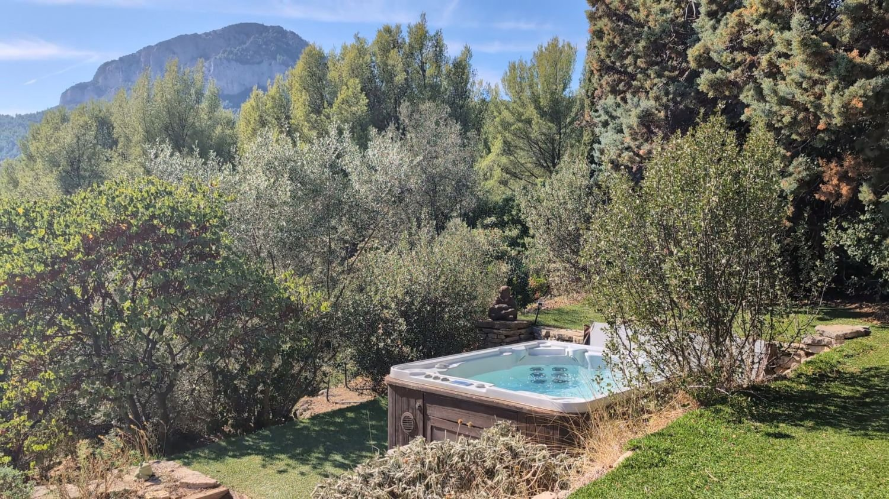
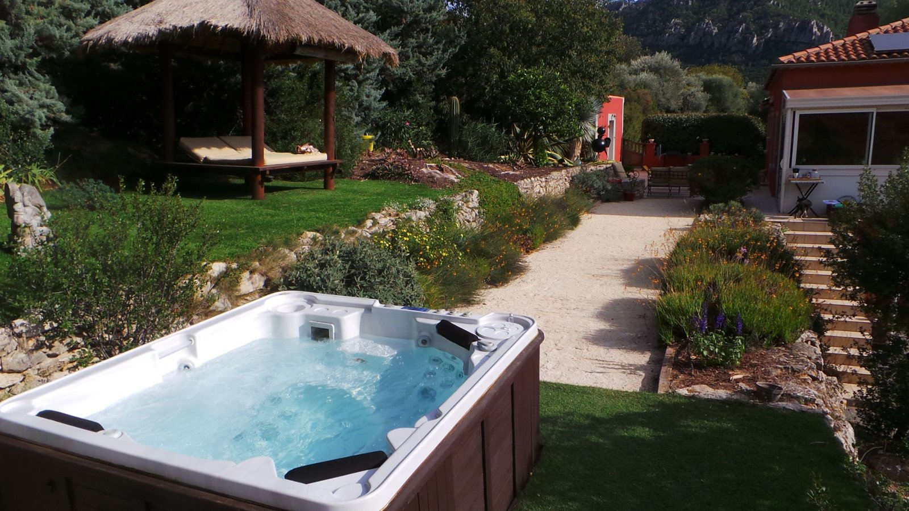

Le jacuzzi
Installé au cœur du jardin de Villa 144, au Revest-les-Eaux, le jacuzzi extérieur vous accueille dans un cadre calme et préservé. Entièrement privatisé, il vous permet de profiter pleinement de la vue sur le mont Faron.

Collation comprise

Pourquoi choisir un spa privatisé ?
- Un jacuzzi réservé à votre groupe, rien que pour vous.
- Idéal en couple, entre amis, pour un anniversaire ou un EVJF.
- Un jardin méditerranéen au calme, à seulement 15 minutes de Toulon.
- Une eau chauffée à 37-38 °C et traitée au brome, sans chlore.
- Une paillote pour se reposer entre deux bains.
- Des huiles essentielles solubles ajoutées à l'eau, en l'absence de contre-indication.
- Une collation incluse.
Envie de prolonger la détente ? Associez le jacuzzi à une séance de sonothérapie, ou découvrez le spa nocturne en été.
Ils ont testé le jacuzzi
★★★★★« Nous avons passé, avec mon amie, deux heures de pur bonheur dans cet endroit très agréable, offrant une vue tout simplement à couper le souffle. Le jacuzzi est incroyable et l'accueil est d'une qualité exceptionnelle. Merci pour ce moment hors du temps ! »— Thomas C., avis Google
★★★★★« Très belle expérience. Nous avons été très bien reçu et tout a été parfait du début à la fin. Endroit calme pas très loin et dépaysant je recommande les yeux fermés. »— Christophe S., avis Google
★★★★★« Une très belle découverte ! Tout était parfait : l'accueil, la propreté, le cadre et les équipements. Un vrai moment de détente et de bien-être. Nous reviendrons avec grand plaisir ! »— Jérôme W., avis Google
Une collation offerte
Votre moment se prolonge avec une collation préparée avec soin, comprise dans le prix.
Un verre de vin ou une boisson chaude, une pâtisserie et des fruits frais.
Une autre boisson vous ferait plaisir ? Précisez-le simplement lors de la réservation.
L'abus d'alcool est dangereux pour la santé, à consommer avec modération.

Questions fréquentes sur le jacuzzi
Où trouver un spa privatif dans le Var ?
Villa 144 propose un spa privatisé au Revest-les-Eaux (83200), à environ 15 minutes du centre de Toulon, avec vue sur le mont Faron. Le jacuzzi extérieur est réservé à votre groupe, jusqu'à 4 personnes, et le hammam l'est aussi, jusqu'à 2 personnes.
Combien coûte le spa privatif à Villa 144 ?
Le jacuzzi extérieur privatisé coûte 100 € pour 2 heures et pour le groupe (jusqu'à 4 personnes), collation comprise. Le hammam privatisé coûte 60 € pour 1 heure, jusqu'à 2 personnes, collation comprise. Le rituel de beauté marocaine (savon noir, gommage au gant kessa, masque au rassoul, huile) dure 2 heures et coûte 85 € pour 2 personnes, collation comprise.
Le jacuzzi est-il chauffé en hiver ?
Oui, le jacuzzi est chauffé toute l'année, à 37-38 °C. Il se profite aussi bien en été qu'en hiver.
Comment l'eau du jacuzzi est-elle entretenue ?
L'eau du jacuzzi est traitée au brome, sans chlore, et chauffée à 37-38 °C toute l'année. Des huiles essentielles solubles peuvent y être ajoutées, en l'absence de contre-indication. Dans le hammam, un diffuseur d'huiles essentielles parfume la cabine.
Que se passe-t-il en cas de pluie ou d'annulation ?
En cas de mauvais temps, la séance peut être reportée, ou le spa extérieur remplacé par un hammam. L'annulation est remboursée jusqu'à 72 h avant le rendez-vous.
Peut-on venir en couple, entre amies ou pour un EVJF ?
Oui. L'espace est entièrement privatisé et accueille jusqu'à 4 personnes : idéal pour un moment à deux, un anniversaire, une sortie entre amies ou un enterrement de vie de jeune fille.
Faut-il apporter quelque chose ?
Apportez votre maillot de bain, un peignoir, une serviette et des tongs : peignoirs et serviettes ne sont pas fournis. Un espace dédié avec un endroit pour se changer, une douche et des WC est à votre disposition.